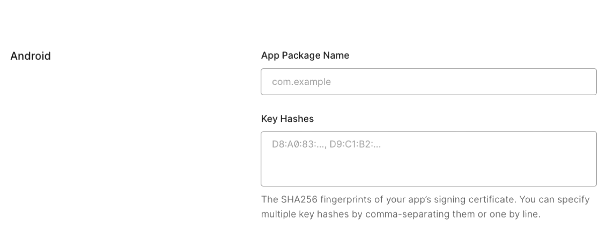
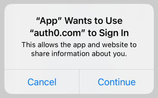

React Native Auth0 - v5.0.0


📚 Documentation • 🚀 Getting Started • ⏭️ Next Steps • ❓ FAQs • ❓ Feedback
⚠️ Important Migration Notice: v4.0.0 and v5.0.0
We're excited to announce the release of react-native-auth0 v5.0.0!
For v5.0.0 users: This version requires React 19 and React Native 0.78.0 or higher. If you're using Expo, this version requires Expo 53 or higher. See the 👉 Migration Guide 👈 for compatibility requirements and upgrade instructions.
Documentation
- Quickstart
- Expo Quickstart
- Sample App
- Expo Sample App
- React Native Web Setup
- FAQs
- Examples
- Examples for Web
- Docs Site
Getting Started
Requirements
This SDK targets apps that are using React Native SDK version 0.78.0 and up. If you're using an older React Native version, see the compatibility matrix below.
This SDK fully supports React Native New Architecture and Expo 53+.
⚠️ Warning: If you are using Expo version less than 53, you need to use react-native-auth0 version 4.x or earlier. Version 5.x supports Expo 53 and above.
Platform compatibility
The following shows platform minimums for running projects with this SDK:
| Platform | Minimum version |
|---|---|
| iOS | 14.0 |
| Android | 35 |
Our SDK requires a minimum iOS deployment target of 14.0. In your project's ios/Podfile, ensure your platform target is set to 14.0.
platform :ios, '14.0'
Installation
First install the native library module:
With npm
$ npm install react-native-auth0 --save
With Yarn
$ yarn add react-native-auth0
Then, you need to run the following command to install the ios app pods with Cocoapods. That will auto-link the iOS library:
$ cd ios && pod install
Configure the SDK
You need to make your Android, iOS or Expo applications aware that an authentication result will be received from the browser. This SDK makes use of the Android's Package Name and its analogous iOS's Product Bundle Identifier to generate the redirect URL. Each platform has its own set of instructions.
Android
Before version 2.9.0, this SDK required you to add an intent filter to the Activity on which you're going to receive the authentication result, and to use the
singleTasklaunchMode in that activity. To migrate your app to version 2.9.0+, remove both and continue with the instructions below. You can also check out a sample migration diff here.
Open your app's build.gradle file (typically at android/app/build.gradle) and add the following manifest placeholders:
android {
defaultConfig {
// Add the next line
manifestPlaceholders = [auth0Domain: "YOUR_AUTH0_DOMAIN", auth0Scheme: "${applicationId}.auth0"]
}
...
}
The auth0Domain value must be replaced with your Auth0 domain value. So if you have samples.us.auth0.com as your Auth0 domain you would have a configuration like the following:
android {
defaultConfig {
manifestPlaceholders = [auth0Domain: "samples.us.auth0.com", auth0Scheme: "${applicationId}.auth0"]
}
...
}
The applicationId value will be auto-replaced at runtime with the package name or ID of your application (e.g. com.example.app). You can change this value from the build.gradle file. You can also check it at the top of your AndroidManifest.xml file.
Note that if your Android application is using product flavors, you might need to specify different manifest placeholders for each flavor.
If you use a value other than applicationId in auth0Scheme you will also need to pass it as the customScheme option parameter of the authorize and clearSession methods.
Take note of this value as you'll be requiring it to define the callback URLs below.
For more info please read the React Native docs.
Skipping the Web Authentication setup
If you don't plan to use Web Authentication, you will notice that the compiler will still prompt you to provide the manifestPlaceholders values, since the RedirectActivity included in this library will require them, and the Gradle tasks won't be able to run without them.
Re-declare the activity manually with tools:node="remove" in your app's Android Manifest in order to make the manifest merger remove it from the final manifest file. Additionally, one more unused activity can be removed from the final APK by using the same process. A complete snippet to achieve this is:
<activity
android:name="com.auth0.android.provider.AuthenticationActivity"
tools:node="remove"/>
<!-- Optional: Remove RedirectActivity -->
<activity
android:name="com.auth0.android.provider.RedirectActivity"
tools:node="remove"/>
iOS
Inside the ios folder find the file AppDelegate.[swift|m] add the following to it:
For Objective-C:
#import <React/RCTLinkingManager.h>
- (BOOL)application:(UIApplication *)app openURL:(NSURL *)url
options:(NSDictionary<UIApplicationOpenURLOptionsKey, id> *)options
{
return [RCTLinkingManager application:app openURL:url options:options];
}
For Swift:
func application(_ app: UIApplication, open url: URL, options: [UIApplication.OpenURLOptionsKey : Any] = [:]) -> Bool {
return RCTLinkingManager.application(app, open: url, options: options)
}
Inside the ios folder open the Info.plist and locate the value for CFBundleIdentifier, e.g.
<key>CFBundleIdentifier</key>
<string>$(PRODUCT_BUNDLE_IDENTIFIER)</string>
and then below it register a URL type entry using the value of CFBundleIdentifier as the value for CFBundleURLSchemes:
<key>CFBundleURLTypes</key>
<array>
<dict>
<key>CFBundleTypeRole</key>
<string>None</string>
<key>CFBundleURLName</key>
<string>auth0</string>
<key>CFBundleURLSchemes</key>
<array>
<string>$(PRODUCT_BUNDLE_IDENTIFIER).auth0</string>
</array>
</dict>
</array>
If your application is generated using the React Native CLI, the default value of $(PRODUCT_BUNDLE_IDENTIFIER) matches org.reactjs.native.example.$(PRODUCT_NAME:rfc1034identifier). Take note of this value as you'll be requiring it to define the callback URLs below. If desired, you can change its value using XCode in the following way:
- Open the
ios/TestApp.xcodeprojfile replacing 'TestApp' with the name of your app or runxed iosfrom a Terminal. - Open your project's or desired target's Build Settings tab and on the search bar at the right type "Product Bundle Identifier".
- Replace the Product Bundle Identifier value with your desired application's bundle identifier name (e.g.
com.example.app). - If you've changed the project wide settings, make sure the same were applied to each of the targets your app has.
If you use a value other than $(PRODUCT_BUNDLE_IDENTIFIER) in the CFBundleURLSchemes field of the Info.plist you will also need to pass it as the customScheme option parameter of the authorize and clearSession methods.
For more info please read the React Native docs.
Expo
:warning: This SDK is not compatible with "Expo Go" app because of custom native code. It is compatible with Custom Dev Client and EAS builds
To use the SDK with Expo, configure the app at build time by providing the domain and the customScheme values through the Config Plugin. To do this, add the following snippet to app.json or app.config.js:
{
"expo": {
...
"plugins": [
[
"react-native-auth0",
{
"domain": "YOUR_AUTH0_DOMAIN",
"customScheme": "YOUR_CUSTOM_SCHEME"
}
]
]
}
}
:info: If you want to switch between multiple domains in your app, refer here
| API | Description |
|---|---|
| domain | Mandatory: Provide the Auth0 domain that can be found at the Application Settings |
| customScheme | Optional: Custom scheme to build the callback URL with. The value provided here should be passed to the customScheme option parameter of the authorize and clearSession methods. The custom scheme should be a unique, all lowercase value with no special characters. |
Now you can run the application using expo run:android or expo run:ios.
Callback URL(s)
Callback URLs are the URLs that Auth0 invokes after the authentication process. Auth0 routes your application back to this URL and appends additional parameters to it, including a token. Since callback URLs can be manipulated, you will need to add this URL to your Application's Allowed Callback URLs for security. This will enable Auth0 to recognize these URLs as valid. If omitted, authentication will not be successful.
On the Android platform this URL is case-sensitive. Because of that, this SDK will auto convert the Bundle Identifier (iOS) and Application ID (Android) values to lowercase in order to build the Callback URL with them. If any of these values contains uppercase characters a warning message will be printed in the console. Make sure to check that the right Callback URL is whitelisted in the Auth0 dashboard or the browser will not route successfully back to your application.
Go to the Auth0 Dashboard, select your application and make sure that Allowed Callback URLs contains the URLs defined below.
If in addition you plan to use the log out method, you must also add these URLs to the Allowed Logout URLs.
Whenever possible, Auth0 recommends using Android App Links and Apple Universal Links for your callback and logout URLs. Custom URL schemes can be subject to client impersonation attacks.
💡 If your Android app is using product flavors, you might need to specify different manifest placeholders for each flavor.
Android
Custom Scheme
{YOUR_APP_PACKAGE_NAME}.auth0://{YOUR_AUTH0_DOMAIN}/android/{YOUR_APP_PACKAGE_NAME}/callback
App Link (Recommended):
https://{YOUR_AUTH0_DOMAIN}/android/{YOUR_APP_PACKAGE_NAME}/callback
Replace {YOUR_APP_PACKAGE_NAME} and {YOUR_AUTH0_DOMAIN} with your actual application package name and Auth0 domain. Ensure that {YOUR_APP_PACKAGE_NAME} is all lowercase.
To enable App Links, set the auth0Scheme to https in your build.gradle file.
android {
defaultConfig {
manifestPlaceholders = [auth0Domain: "@string/com_auth0_domain", auth0Scheme: "https"]
}
}
This configuration ensures that your app uses https for the callback URL scheme, which is required for Android App Links.
Enable Android App Links Support
Android App Links allow an application to designate itself as the default handler of a given type of link. For example, clicking a URL in an email would open the link in the designated application. This guide will show you how to enable Android App links support for your Auth0-registered application using Auth0's Dashboard.
-
Go to Auth0 Dashboard > Applications > Applications, and select the name of the application to view.
-
Scroll to the bottom of the Settings page, and select Show Advanced Settings.
-
Select Device Settings, provide the App Package Name and the SHA256 fingerprints of your app’s signing certificate for your Android application, and select Save Changes. 
You can use the following command to generate the fingerprint using the Java keytool in your terminal:
keytool -list -v -keystore my-release-key.keystore
To learn more about signing certificates, see Android's Sign Your App developer documentation.
iOS
Custom Scheme
{PRODUCT_BUNDLE_IDENTIFIER}.auth0://{YOUR_AUTH0_DOMAIN}/ios/{PRODUCT_BUNDLE_IDENTIFIER}/callback
Universal Link (Recommended):
https://{YOUR_AUTH0_DOMAIN}/ios/{PRODUCT_BUNDLE_IDENTIFIER}/callback
Replace
{PRODUCT_BUNDLE_IDENTIFIER}and{YOUR_AUTH0_DOMAIN}with your actual product bundle identifier and Auth0 domain. Ensure that {PRODUCT_BUNDLE_IDENTIFIER} is all lowercase.
Configure an associated domain for iOS
This step requires a paid Apple Developer account. It is needed to use Universal Links as callback and logout URLs. Skip this step to use a custom URL scheme instead.
Configure the Team ID and bundle identifier
Scroll to the end of the settings page of your Auth0 application and open Advanced Settings > Device Settings. In the iOS section, set Team ID to your Apple Team ID, and App ID to your app's bundle identifier.
This will add your app to your Auth0 tenant's apple-app-site-association file.
Add the associated domain capability
In Xcode, go to the Signing and Capabilities tab of your app's target settings, and press the + Capability button. Then select Associated Domains.
Next, add the following entry under Associated Domains:
webcredentials:YOUR_AUTH0_DOMAIN
Example
If your Auth0 Domain were example.us.auth0.com, then this value would be:
webcredentials:example.us.auth0.com
If you have a custom domain, replace YOUR_AUTH0_DOMAIN with your custom domain.
For the associated domain to work, your app must be signed with your team certificate even when building for the iOS simulator. Make sure you are using the Apple Team whose Team ID is configured in the settings page of your Auth0 application.
Refer to the example of Using custom scheme for web authentication redirection
Next Steps
This SDK is OIDC compliant. To ensure OIDC compliant responses from the Auth0 servers enable the OIDC Conformant switch in your Auth0 dashboard under
Application / Settings / Advanced OAuth. For more information please check this documentation.
Web Authentication
The SDK exports a React hook as the primary interface for performing web authentication through the browser using Auth0 Universal Login.
Use the methods from the useAuth0 hook to implement login, logout, and to retrieve details about the authenticated user.
See the API Documentation for full details on the useAuth0 hook.
First, import the Auth0Provider component and wrap it around your application. Provide the domain and clientId values as given to you when setting up your Auth0 app in the dashboard:
import { Auth0Provider } from 'react-native-auth0';
const App = () => {
return (
<Auth0Provider domain="YOUR_AUTH0_DOMAIN" clientId="YOUR_AUTH0_CLIENT_ID">
{/* YOUR APP */}
</Auth0Provider>
);
};
export default App;
You can also pass custom headers that will be included in all API requests:
import { Auth0Provider } from 'react-native-auth0';
const App = () => {
return (
<Auth0Provider
domain="YOUR_AUTH0_DOMAIN"
clientId="YOUR_AUTH0_CLIENT_ID"
headers={{ 'X-Custom-Header': 'custom-value' }}
>
{/* YOUR APP */}
</Auth0Provider>
);
};
export default App;
Using the `Auth0` class
If you're not using React Hooks, you can simply instantiate the Auth0 class:
import Auth0 from 'react-native-auth0';
const auth0 = new Auth0({
domain: 'YOUR_AUTH0_DOMAIN',
clientId: 'YOUR_AUTH0_CLIENT_ID',
});
You can also pass custom headers that will be included in all API requests:
import Auth0 from 'react-native-auth0';
const auth0 = new Auth0({
domain: 'YOUR_AUTH0_DOMAIN',
clientId: 'YOUR_AUTH0_CLIENT_ID',
headers: {
'X-Custom-Header': 'custom-value',
},
});
Then import the hook into a component where you want to get access to the properties and methods for integrating with Auth0:
import { useAuth0 } from 'react-native-auth0';
Login
Use the authorize method to redirect the user to the Auth0 Universal Login page for authentication. If scope is not specified, openid profile email is used by default.
- The
isLoadingproperty is set to true once the authentication state of the user is known to the SDK. - The
userproperty is populated with details about the authenticated user. Ifuserisnull, no user is currently authenticated. - The
errorproperty is populated if any error occurs.
const Component = () => {
const { authorize, user, isLoading, error } = useAuth0();
const login = async () => {
await authorize();
};
if (isLoading) {
return (
<View>
<Text>SDK is Loading</Text>
</View>
);
}
return (
<View>
{!user && <Button onPress={login} title="Log in" />}
{user && <Text>Logged in as {user.name}</Text>}
{error && <Text>{error.message}</Text>}
</View>
);
};
Using the `Auth0` class
auth0.webAuth
.authorize()
.then(credentials => console.log(credentials))
.catch(error => console.log(error));
Web Authentication flows require a Browser application installed on the device. When no Browser is available, an error of type
a0.browser_not_availablewill be raised via the provided callback.
SSO Alert Box (iOS)

Check the FAQ for more information about the alert box that pops up by default when using Web Auth on iOS.
See also this blog post for a detailed overview of Single Sign-On (SSO) on iOS.
Logout
Log the user out by using the clearSession method from the useAuth0 hook.
const Component = () => {
const { clearSession, user } = useAuth0();
const logout = async () => {
await clearSession();
};
return <View>{user && <Button onPress={logout} title="Log out" />}</View>;
};
Using the `Auth0` class
auth0.webAuth.clearSession().catch((error) => console.log(error));
Credentials Manager
- Check for stored credentials
- Retrieve stored credentials
- Local authentication
- Credentials Manager errors
The Credentials Manager allows you to securely store and retrieve the user's credentials. The credentials will be stored encrypted in Shared Preferences on Android, and in the Keychain on iOS.
The Auth0 class exposes the credentialsManager property for you to interact with using the API below.
💡 If you're using Web Auth (
authorize) through Hooks, you do not need to manually store the credentials after login and delete them after logout; the SDK does this automatically.
Check for stored credentials
When the users open your app, check for valid credentials. If they exist, you can retrieve them and redirect the users to the app's main flow without any additional login steps.
const isLoggedIn = await auth0.credentialsManager.hasValidCredentials();
if (isLoggedIn) {
// Retrieve credentials and redirect to the main flow
} else {
// Redirect to the login page
}
Retrieve stored credentials
The credentials will be automatically renewed using the refresh token, if the access token has expired. This method is thread safe.
const credentials = await auth0.credentialsManager.getCredentials();
💡 You do not need to call credentialsManager.saveCredentials() afterward. The Credentials Manager automatically persists the renewed credentials.
Requiring Authentication before obtaining Credentials
:warning: The
requireLocalAuthenticationmethod is no longer available as part of theCredentialsManagerclass or theuseAuth0Hook from v4 of the SDK.
ℹ️ You need to use at least version
0.59.0of React Native, as it usesFragmentActivityas the base activity, which is required for biometric authentication to work.
You can enable an additional level of user authentication before retrieving credentials using the local authentication supported by the device, for example PIN or fingerprint on Android, and Face ID or Touch ID on iOS.
Refer to the instructions below to understand how to enable authentication before retrieving credentials based on your setup:
Using Auth0 Class:
The Auth0 class constructor now accepts a new parameter, which is an instance of the LocalAuthenticationOptions object. This needs to be passed while creating an instance of Auth0 to enable authentication before obtaining credentials, as shown in the code snippet below:
import Auth0 from 'react-native-auth0';
const localAuthOptions: LocalAuthenticationOptions = {
title: 'Authenticate to retrieve your credentials',
subtitle: 'Please authenticate to continue',
description: 'We need to authenticate you to retrieve your credentials',
cancelTitle: 'Cancel',
evaluationPolicy: LocalAuthenticationStrategy.deviceOwnerWithBiometrics,
fallbackTitle: 'Use Passcode',
authenticationLevel: LocalAuthenticationLevel.strong,
deviceCredentialFallback: true,
};
const auth0 = new Auth0({
domain: config.domain,
clientId: config.clientId,
localAuthenticationOptions: localAuthOptions,
});
Using Hooks (Auth0Provider):
Auth0Provider now accepts a new parameter, which is an instance of the LocalAuthenticationOptions object. This needs to be passed to enable authentication before obtaining credentials, as shown in the code snippet below:
import { Auth0Provider } from 'react-native-auth0';
const localAuthOptions: LocalAuthenticationOptions = {
title: 'Authenticate to retrieve your credentials',
subtitle: 'Please authenticate to continue',
description: 'We need to authenticate you to retrieve your credentials',
cancelTitle: 'Cancel',
evaluationPolicy: LocalAuthenticationStrategy.deviceOwnerWithBiometrics,
fallbackTitle: 'Use Passcode',
authenticationLevel: LocalAuthenticationLevel.strong,
deviceCredentialFallback: true,
};
const App = () => {
return (
<Auth0Provider
domain={config.domain}
clientId={config.clientId}
localAuthenticationOptions={localAuthOptions}
>
{/* YOUR APP */}
</Auth0Provider>
);
};
export default App;
Detailed information on LocalAuthenticationOptions is available here
LocalAuthenticationOptions:
The options for configuring the display of local authentication prompt, authentication level (Android only), and evaluation policy (iOS only).
Properties:
| Property | Type | Description | Applicable Platforms |
|---|---|---|---|
title |
String |
The title of the authentication prompt. | Android, iOS |
subtitle |
String (optional) |
The subtitle of the authentication prompt. | Android |
description |
String (optional) |
The description of the authentication prompt. | Android |
cancelTitle |
String (optional) |
The cancel button title of the authentication prompt. | Android, iOS |
evaluationPolicy |
LocalAuthenticationStrategy (optional) |
The evaluation policy to use when prompting the user for authentication. Defaults to deviceOwnerWithBiometrics. |
iOS |
fallbackTitle |
String (optional) |
The fallback button title of the authentication prompt. | iOS |
authenticationLevel |
LocalAuthenticationLevel (optional) |
The authentication level to use when prompting the user for authentication. Defaults to strong. |
Android |
deviceCredentialFallback |
Boolean (optional) |
Should the user be given the option to authenticate with their device PIN, pattern, or password instead of a biometric. Defaults to false |
Android |
:warning: You need a real device to test Local Authentication for iOS. Local Authentication is not available in simulators.
Credentials Manager errors
The Credentials Manager will only throw CredentialsManagerError exceptions. You can find more information in the details property of the exception.
try {
const credentials = await auth0.credentialsManager.getCredentials();
} catch (error) {
console.log(error);
}
Platform agnostic errors:
You can access the platform agnostic generic error codes as below :
try {
const credentials = await auth0.credentialsManager.getCredentials();
} catch (error) {
console.log(e.type);
}
| Generic Error Code | Android Native Error | iOS Native Error | Web Error Code |
|---|---|---|---|
INVALID_CREDENTIALS |
INVALID_CREDENTIALS |
||
NO_CREDENTIALS |
NO_CREDENTIALS |
noCredentials |
login_required |
NO_REFRESH_TOKEN |
NO_REFRESH_TOKEN |
noRefreshToken |
|
RENEW_FAILED |
RENEW_FAILED |
renewFailed |
missing_refresh_token, invalid_grant,consent_required |
STORE_FAILED |
STORE_FAILED |
storeFailed |
|
REVOKE_FAILED |
REVOKE_FAILED |
revokeFailed |
|
LARGE_MIN_TTL |
LARGE_MIN_TTL |
largeMinTTL |
|
INCOMPATIBLE_DEVICE |
INCOMPATIBLE_DEVICE |
||
CRYPTO_EXCEPTION |
CRYPTO_EXCEPTION |
||
BIOMETRICS_FAILED |
OneOf BIOMETRIC_NO_ACTIVITY,BIOMETRIC_ERROR_STATUS_UNKNOWN,BIOMETRIC_ERROR_UNSUPPORTED,BIOMETRIC_ERROR_HW_UNAVAILABLE,BIOMETRIC_ERROR_NONE_ENROLLED,BIOMETRIC_ERROR_NO_HARDWARE,BIOMETRIC_ERROR_SECURITY_UPDATE_REQUIRED,BIOMETRIC_AUTHENTICATION_CHECK_FAILED,BIOMETRIC_ERROR_DEVICE_CREDENTIAL_NOT_AVAILABLE |
biometricsFailed |
|
NO_NETWORK |
NO_NETWORK |
||
API_ERROR |
API_ERROR |
WebAuth errors
Before (Platform-Specific Codes)
// Old way: required checking Platform.OS and different error codes
import { Platform } from 'react-native';
try {
await auth0.webAuth.authorize();
} catch (e) {
const isCancelled =
Platform.OS === 'ios'
? e.code === 'USER_CANCELLED'
: e.code === 'a0.session.user_cancelled';
if (isCancelled) {
console.log('User cancelled the login.');
} else {
console.error(e);
}
}
After (Platform-Agnostic and Typed)
// New way: use 'instanceof' and the 'type' property
import { WebAuthError } from 'react-native-auth0';
try {
await auth0.webAuth.authorize();
} catch (e) {
if (e instanceof WebAuthError && e.type === 'USER_CANCELLED') {
console.log('User cancelled the login.');
} else {
// Handle other errors
console.error(e);
}
}
| Platform-Agnostic | Description | Android Native Error | iOS Native Error | Web Error Code |
|---|---|---|---|---|
USER_CANCELLED |
The user actively cancelled the web authentication flow. | a0.session.user_cancelled |
USER_CANCELLED |
cancelled |
BROWSER_NOT_AVAILABLE |
No compatible browser application is installed on the device. | a0.browser_not_available |
- | |
NO_BUNDLE_IDENTIFIER |
The native bundle identifier could not be retrieved, which is required to construct the callback URL. | - | NO_BUNDLE_IDENTIFIER |
|
FAILED_TO_LOAD_URL |
The authorization URL could not be loaded in the browser. | a0.session.failed_load |
- | |
BROWSER_TERMINATED |
The browser was closed unexpectedly, likely because the application was relaunched from the home screen while the login was in progress. | a0.session.browser_terminated |
- | |
INVALID_STATE |
The state parameter returned from the server did not match the one sent, indicating a potential Cross-Site Request Forgery (CSRF) attack. |
access_denied |
OTHER |
state_mismatch |
ACCESS_DENIED |
The user or Auth0 denied the authentication request. This can be caused by a user denying consent, a failing Action or Rule, or other authorization policies. | access_denied |
OTHER |
access_denied |
CONSENT_REQUIRED |
The user needs to explicitly grant consent for the application to access requested scopes or resources. | - | consent_required |
|
NO_AUTHORIZATION_CODE |
The callback URL from the server is missing the required code parameter needed for the token exchange. |
- | NO_AUTHORIZATION_CODE |
|
INVALID_CONFIGURATION |
The Auth0 Application is misconfigured. Common causes include an invalid social connection configuration. | a0.invalid_configuration |
OTHER |
|
PKCE_NOT_ALLOWED |
PKCE is required but not enabled for the Auth0 Application. Ensure the "Application Type" is set to "Native" in your Auth0 dashboard. | a0.pkce_not_available |
PKCE_NOT_ALLOWED |
|
ID_TOKEN_VALIDATION_FAILED |
The ID token received is invalid and failed one or more validation checks, such as signature, issuer, audience, or nonce verification. | a0.session.invalid_idtoken |
ID_TOKEN_VALIDATION_FAILED |
(various validation Errors). |
INVALID_INVITATION_URL |
The organization invitation URL is malformed or missing the required organization and invitation parameters. |
- | INVALID_INVITATION_URL |
|
NETWORK_ERROR |
A network error occurred, preventing the request from completing. The device may be offline or unable to reach the Auth0 servers. | a0.network_error |
OTHER (with URLError cause) |
(Network-related fetch exception) |
TIMEOUT_ERROR |
The web authentication flow timed out. | - | - | timeout (from PopupTimeoutError) |
UNKNOWN_ERROR |
An unexpected or uncategorized error occurred. Check the message and cause properties for more specific details. |
(various) | UNKNOWN or OTHER |
Features and Platform Support
This library provides a unified API across Native (iOS/Android) and Web platforms. However, due to security models and underlying technology, not all features are available on every platform.
| Feature / Method Category | Native (iOS/Android) | Web (Browser) | Notes & Rationale |
|---|---|---|---|
| Web Authentication | --- | ||
webAuth.authorize() |
✅ | ✅ | Primary login method. Uses ASWebAuthenticationSession/Custom Tabs on Native and loginWithRedirect on Web. |
webAuth.clearSession() |
✅ | ✅ | Primary logout method. Clears the session cookie on the server via a browser redirect. |
webAuth.handleRedirectCallback() |
❌ | ✅ | Web-only. Manually processes the callback from Auth0. Handled automatically when using the Auth0Provider hook. |
| Credential Management | --- | ||
credentialsManager.getCredentials() |
✅ | ✅ | Retrieves stored tokens. On Native, it uses the secure Keychain/Keystore. On Web, it uses the @auth0/auth0-spa-js cache and getTokenSilently. |
credentialsManager.hasValidCredentials() |
✅ | ✅ | Checks for a valid local session. |
credentialsManager.saveCredentials() |
✅ | ❌ | Native-only. Manually saving credentials is required on Native. On Web, this is handled automatically by the underlying SPA SDK and is a no-op. |
credentialsManager.clearCredentials() |
✅ | ✅ | Clears locally stored tokens. On Web, this performs a "local-only" logout. |
| Direct Authentication Grants | --- | ||
auth.passwordRealm() |
✅ | ❌ | Not supported on Web for security reasons. The Resource Owner Password Grant exposes credentials to the browser and is not recommended for Single Page Applications. |
auth.passwordless...() |
✅ | ❌ | Not supported on Web. Passwordless flows on the web should be configured via Universal Login and initiated with webAuth.authorize(). |
auth.loginWith...() (OTP/SMS etc) |
✅ | ❌ | Not supported on Web. These direct grant flows are not secure for public clients like browsers. |
| Token & User Management | --- | ||
auth.refreshToken() |
✅ | ❌ | Not supported on Web. Token refresh is handled automatically by getCredentials() via getTokenSilently() on the web. |
auth.userInfo() |
✅ | ✅ | Fetches the user's profile from the /userinfo endpoint using an access token. |
auth.createUser() |
✅ | ✅ | Calls the /dbconnections/signup endpoint. Works on both platforms. |
auth.resetPassword() |
✅ | ✅ | Calls the /dbconnections/change_password endpoint. Works on both platforms. |
users(token).patchUser() |
✅ | ✅ | Calls the Management API. Works on any platform with a valid token, but use with caution in the browser. |
Troubleshooting
Swift 6 Compatibility Issues on iOS
If your main application project is configured to use Swift 6, and you encounter build errors related to Swift version incompatibilities with react-native-auth0 or its dependencies (like Auth0.swift, JWTDecode, SimpleKeychain), you can ensure these specific pods are compiled with Swift 5.
While react-native-auth0 (from v5.0.0-beta.1 onwards) and its direct Swift dependencies are configured to use Swift 5, your project's build settings might try to override this. To enforce Swift 5 for these pods:
Recommended: Podfile post_install Hook
Add the following post_install hook to your application's ios/Podfile. This is generally the most robust way to manage build settings for dependencies:
# In your application's ios/Podfile
post_install do |installer|
installer.pods_project.targets.each do |target|
# Target the react-native-auth0 pod and its Swift dependencies
if ['Auth0', 'A0Auth0', 'JWTDecode', 'SimpleKeychain'].include?(target.name)
target.build_configurations.each do |config|
config.build_settings['SWIFT_VERSION'] = '5.0'
end
end
end
end
Feedback
Contributing
We appreciate feedback and contribution to this repo! Before you get started, please see the following:
- Auth0's general contribution guidelines
- Auth0's code of conduct guidelines
- This repo's development guide
Raise an issue
To provide feedback or report a bug, please raise an issue on our issue tracker.
Vulnerability Reporting
Please do not report security vulnerabilities on the public Github issue tracker. The Responsible Disclosure Program details the procedure for disclosing security issues.

Auth0 is an easy to implement, adaptable authentication and authorization platform. To learn more checkout Why Auth0?
This project is licensed under the MIT license. See the LICENSE file for more info.